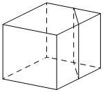

Авторский разбор и аудит предварительны; внешней экспертизы нет.
Модель автора: claude-opus-5-5 (opus; effort=low); в основных частотах: True ·
Впишите правильный ответ.
| Объём куба равен 144. Найдите объём треугольной призмы, отсекаемой |  |
КЭС: 7.3 Многогранники
18
| ID / вход | Действие | Результат | Локальные KC |
|---|---|---|---|
| s1 · condition | Определить отсекаемую призму: основание — прямоугольный треугольник с катетами, равными половинам рёбер куба, высота — третье ребро куба (плоскость параллельна ему) | Основание — прямоугольный треугольник с катетами a/2, a/2; высота призмы a | kc1 |
| s2 · s1 | Выразить объём призмы через ребро куба: V = (1/2)(a/2)(a/2)·a = a³/8 | V_призмы = V_куба/8 | kc2 |
| s3 · s2, condition | Подставить объём куба: 144/8 | 18 | kc2 |
[
{
"id": "m1",
"name": "Выражение объёма отсечённой призмы через ребро куба",
"step_ids": [
"s1",
"s2",
"s3"
]
}
]По описанию секущей плоскости (через заданные точки рёбер, параллельно ребру) установить вид отсекаемого тела и выразить его линейные элементы через рёбра исходного многогранника.
{
"local_kc_id": "kc1",
"status": "needs_split",
"catalog_kc_id": null,
"evidence": [
{
"ref": "step:s1:action",
"quote": "Определить отсекаемую призму: основание — прямоугольный треугольник с катетами, равными половинам рёбер куба, высота — третье ребро куба (плоскость параллельна ему)"
},
{
"ref": "step:s1:result",
"quote": "Основание — прямоугольный треугольник с катетами a/2, a/2; высота призмы a"
},
{
"ref": "image:assets/2b88519241e224d0ae7dfbda.png",
"region_description": "Куб; у правой задней части проведены вертикальная линия на верхней грани и вертикальный след плоскости на правой грани, отсекающие узкую часть у вертикального ребра"
}
],
"context_refs": [
"condition",
"image:assets/2b88519241e224d0ae7dfbda.png"
],
"alternatives_checked": [
{
"catalog_kc_id": "literal_0cd75b4548b3",
"reason": "Покрывает только распознавание призмы (параллельные равные основания, боковые рёбра), но не нахождение катетов a/2 и высоты a"
},
{
"catalog_kc_id": "literal_6f2cb1731d16",
"reason": "Тип сечения по пересечённым рёбрам — близкая часть, но кандидат описывает отсекаемое тело и его размеры, а не только сечение"
},
{
"catalog_kc_id": "literal_19971b364ca1",
"reason": "Вычисление объёма — следующий шаг"
}
],
"rationale": "Кандидат объединяет установление вида отсекаемого тела (призма с треугольным основанием), прямоугольности основания и выражение линейных элементов через ребро куба (середины рёбер → катеты a/2, параллельность ребру → высота a). Это несколько действий; одно узкое определение каталога их целиком не покрывает.",
"proposal": {
"parts": [
{
"part": "Распознать отсекаемое тело как прямую треугольную призму по плоскости, параллельной ребру",
"possible_catalog_kc_id": "literal_0cd75b4548b3"
},
{
"part": "Установить, какие рёбра пересекает плоскость и вид сечения/основания",
"possible_catalog_kc_id": "literal_6f2cb1731d16"
},
{
"part": "Выразить катеты основания и высоту через ребро куба по серединам рёбер и прямым углам куба",
"possible_catalog_kc_id": null
}
]
},
"blocking": false,
"issue_ids": []
}Для призмы с известными (или выраженными через параметр) основанием и высотой найти объём V=S·h, в том числе как долю объёма исходного тела.
{
"local_kc_id": "kc2",
"status": "needs_split",
"catalog_kc_id": null,
"evidence": [
{
"ref": "step:s2:action",
"quote": "V = (1/2)(a/2)(a/2)·a = a³/8"
},
{
"ref": "step:s2:result",
"quote": "V_призмы = V_куба/8"
},
{
"ref": "step:s3:action",
"quote": "Подставить объём куба: 144/8"
}
],
"context_refs": [
"step:s1:result",
"condition"
],
"alternatives_checked": [
{
"catalog_kc_id": "literal_19971b364ca1",
"reason": "Соответствует умножению площади основания на высоту a, но кандидат дополнительно включает площадь основания и переход к доле объёма куба"
},
{
"catalog_kc_id": "right_triangle_area",
"reason": "Множитель (1/2)(a/2)(a/2) — площадь прямоугольного треугольника, отдельный узел"
},
{
"catalog_kc_id": "physical_formula_substitution",
"reason": "Подстановка 144 в V_куба/8 — элементарная арифметика, не подстановка в физическую формулу"
}
],
"rationale": "В s2 выполнены два действия: площадь прямоугольного треугольника (1/2·катет·катет) и объём призмы S·h; затем выражение через V_куба=a³ и подстановка в s3. Кандидат размечен на s2 и s3, смешивая площадь основания, объём призмы и отношение объёмов.",
"proposal": {
"parts": [
{
"part": "Площадь основания (1/2)(a/2)(a/2)",
"possible_catalog_kc_id": "right_triangle_area"
},
{
"part": "Объём призмы S·h с высотой a, перпендикулярной основанию",
"possible_catalog_kc_id": "literal_19971b364ca1"
},
{
"part": "Выразить объём как долю a³=V_куба и подставить 144 (арифметика, отдельный KC не обязателен)",
"possible_catalog_kc_id": null
}
]
},
"blocking": false,
"issue_ids": []
}[]
[
{
"id": "i1",
"kind": "missing_annotation",
"refs": [
"step:s2:result",
"step:s3:action"
],
"description": "Использование V_куба=a³ (объём куба) применяется неявно и не выделено; ответ 18 математически верен (144/8).",
"blocking": false,
"affected_local_kc_ids": [
"kc2"
]
}
]{
"author_path": "data/annotation/runs/2026-11-07-fipi-team-bogdan108-051-150/raw/author/F3Fc26.json",
"auditor_path": "data/annotation/runs/2026-11-07-fipi-team-bogdan108-051-150/raw/auditor/F3Fc26.json",
"accepted_after_review": null
}